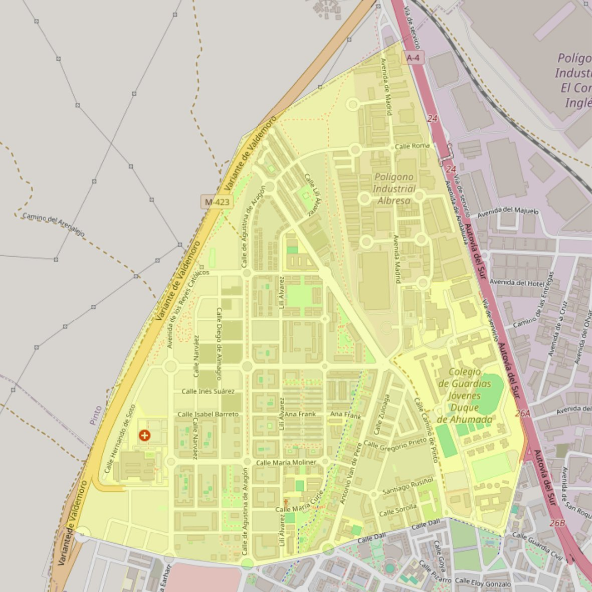

San Vicente de Paúl

- Arciprestazgo
- Valdemoro
- Población
- Valdemoro
- Dirección postal
- c/ María Curie, 15
- Código postal
- 28342
- Extensión
- 2,91 km² (291 ha)
- Teléfono
- 918 762 523
- Correo electrónico
- parroquiadesanvicentedepaul@gmail.com
Arciprestazgos y parroquias de la Diócesis de Getafe
